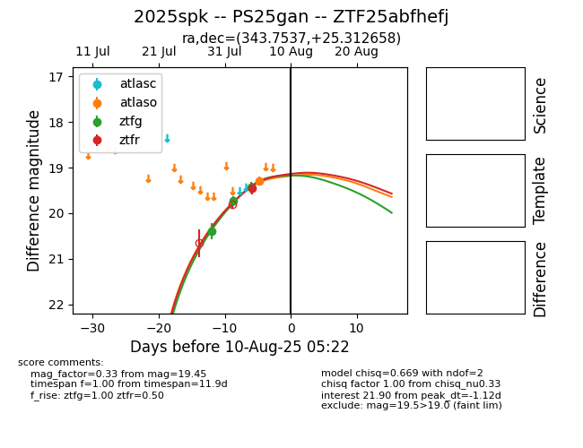

Target 2025spk at 2025-08-10 05:22, see:
FINK: fink-portal.org/2025spk
Lasair: lasair-ztf.lsst.ac.uk/objects/2025spk
ALeRCE: alerce.online/object/2025spk
TNS: wis-tns.org/object/2025spk
YSE: ziggy.ucolick.org/yse/transient_detail/2025spk
alt names
ZTF25abfhefj (ztf,fink)
2025spk (tns,yse)
PS25gan (panstarrs)
coordinates:
equatorial (ra, dec) = (343.7537,+25.31266)
galactic (l, b) = (92.2353,-30.52970)
photometry
last atlaso=19.29, ztfg=19.44, ztfr=19.45
1 atlaso, 3 ztfg, 1 ztfr detections
